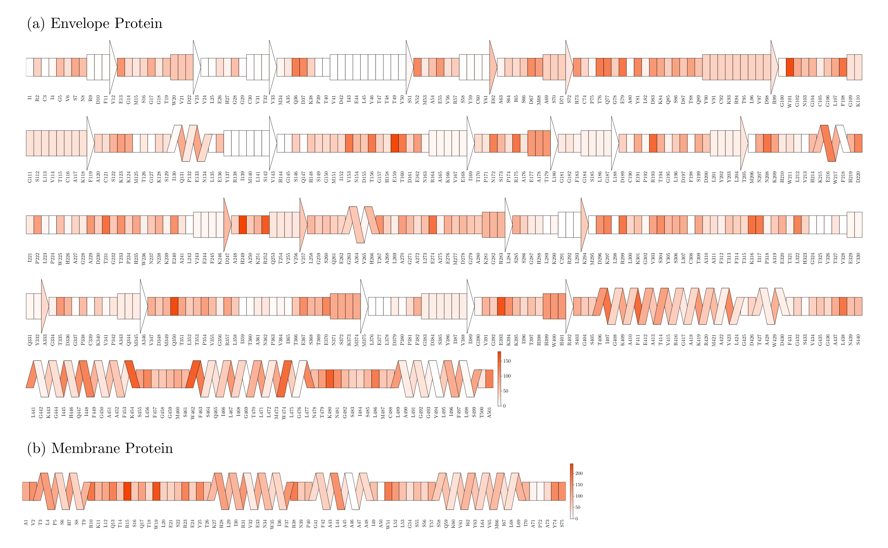
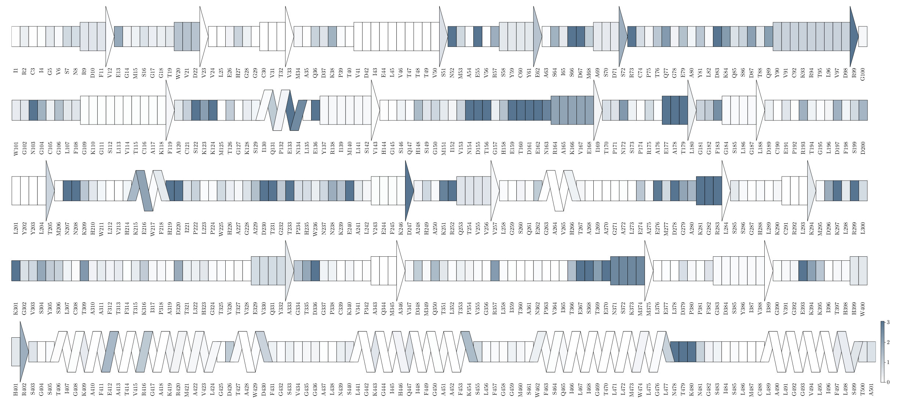
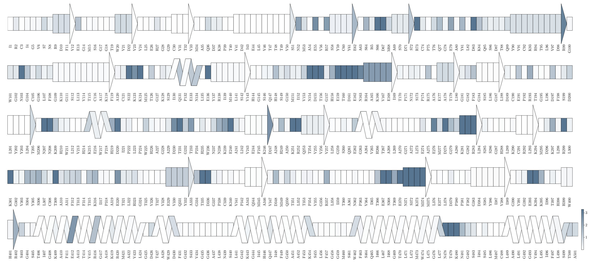
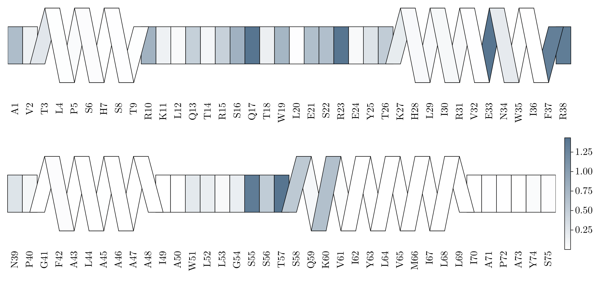

This Supplementary Information provides an extended set of figures, and data visualizations that support and expand upon the findings presented in the primary text. The materials compiled here include additional structural characterizations, time-resolved metrics, comparative plots across simulation conditions, and detailed depiction of interaction patterns that were referenced but not shown in full within the main article.
Figure S1. Surface-projected solvent-accessible surface area (SASA) per residue for the Zika virus E protein. The color scale represents the magnitude of SASA, with darker regions indicating higher solvent exposure. Protein contours are overlaid to delineate the projected topology of the E protein on the viral surface.Figure S2. Time-resolved surface-projected coordination number of WT4 water molecules around residues of the Zika virus E protein. The animation covers the entire simulation trajectory, divided into 100 consecutive time windows of 20 ns each. Color intensity indicates the local WT4 coordination number. Figure S3. Dynamic mapping of WT4 water coordination on the surface of the Zika virus M protein throughout the simulation. The animation depicts the evolution of local hydration environments over 100 successive 20 ns intervals, revealing a heterogeneous and time-dependent distribution of WT4 molecules.Figure S4. Time-resolved visualization of sodium ions coordination patterns on the E protein surface of the Zika virus.Figure S5. Spatial and temporal dynamics of chloride ions interacting with the Zika virus E protein.Figure S6. Evolution of sodium ions coordination across the ZIKV M protein surface.Figure S7. Fluctuating anionic profiles (Cl-) of the M protein in Zika virus simulations.

Figure S8. DSSP-based depiction of the envelope protein illustrating its secondary-structure elements together with the residue-specific SASA.

Figure S9. Sequence-based DSSP map of chain M showing secondary-structure elements alongside the per-residue contribution of WT4 water molecules within 5 Å.Figure S10. DSSP-derived linear representation of chain N annotated with residue-specific contributions of WT4 molecules detected within 5 Å.

Figure S11. Secondary-structure profile of chain O generated via DSSP, coupled with residue-level quantification of WT4 coordination (cutoff 5 Å).

Figure S12. DSSP sequence diagram for chain P integrating secondary structure and the spatial contribution of WT4 water molecules at a 5 Å threshold.
Settings
This document was generated with Documenter.jl version 1.16.1 on Tuesday 3 February 2026. Using Julia version 1.12.4.